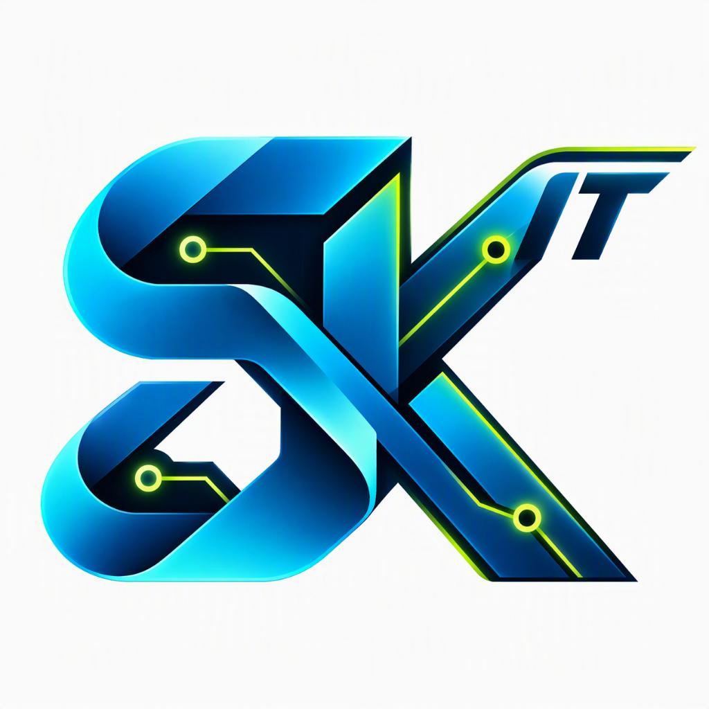

Computer & Endpoint Support
Windows 10/11, macOS, desktops, laptops, mobile devices, peripherals, software issues, updates and new-device setup.

SK IT ServicesLOCAL • PROFESSIONAL • SCALABLE
Practical onsite and remote support, Microsoft cloud administration, managed IT services and flexible technical resourcing for homes, small businesses and community organisations across Geelong, Melbourne and surrounding areas.
CORE IT SERVICES
Professional help for end-user devices, Microsoft platforms, networks and business systems. Work is scoped before commencement, with third-party costs identified where applicable.
Windows 10/11, macOS, desktops, laptops, mobile devices, peripherals, software issues, updates and new-device setup.
Exchange Online, Teams, OneDrive, SharePoint, user administration, mailbox support and Microsoft 365 troubleshooting.
Microsoft Entra ID, Active Directory, users, groups, MFA, access controls and Group Policy assistance.
TCP/IP, DNS, DHCP, VPN, VLAN, routers, switches, wireless access points and connectivity troubleshooting.
PC setup, operating system and application deployment, endpoint configuration and basic data migration.
Remote assistance for suitable issues and local onsite field support for homes, workplaces and multi-site environments.
MANAGED SERVICES
Flexible managed-service options are designed around agreed systems, service requirements and response expectations. Final inclusions and recurring fees are provided in a written proposal.
User provisioning, licensing, Exchange Online, Teams, SharePoint, OneDrive and tenant administration.
Device enrolment, endpoint policies, application lifecycle support, compliance assistance and mobile device management.
Entra ID, MFA, access controls, account security reviews and practical security improvements.
Windows Server, network equipment, VPN, Wi-Fi, virtual environments and small-business infrastructure support.
Support for Veeam Backup & Replication, VMware vSphere, Hyper-V and suitable business-continuity environments.
IT health checks, asset and configuration reviews, technical documentation, procedures and improvement planning.
Structured incident and request support for users, devices, applications and Microsoft cloud services.
Coordination with technology vendors, service providers and approved specialists for scoped requirements.
Microsoft Copilot guidance, AI-assisted workflows, PowerShell automation, basic Python automation and carefully scoped productivity solutions.
IT CONTRACTING & BUSINESS SUPPORT
Short-term operational cover for planned leave, vacancies, project periods or unexpected resource gaps. Available for suitable Level 1/2 support, service desk, endpoint, Microsoft 365, systems administration and onsite support assignments.
Request backfill availability →Project-based or short-term technical contracting for support, deployments, migrations, infrastructure activities and multi-site field work.
Technology-focused administration including documentation, electronic records, asset and procurement administration, vendor coordination, scheduling, Microsoft 365 and stakeholder support.
Deployment coordination, device rollouts, asset audits, site visits, technical documentation and liaison with local or remote support teams.
SPECIALIST & SECONDARY SOLUTIONS
Available by consultation and not the primary focus of SK IT Services. Supply, licences, subscriptions, specialist trades and third-party costs are quoted separately.
Microsoft Copilot adoption, AI workflow planning, prompt and documentation systems, agent concepts and automation opportunities. Complex builds are assessed individually.
Solution planning, display and media-player sourcing, platform setup, network connectivity, device configuration and technical support. Regulated mounting or cabling is referred to appropriately qualified providers where required.
Business VoIP consultation, handset and softphone setup, user configuration, call-flow assistance, provider coordination and troubleshooting. Carrier and subscription charges remain with the selected provider.
Gaming PC builds and upgrades, console setup, display and network configuration, peripheral support and troubleshooting as a secondary service.
Racing cockpit assembly guidance and wheel, pedal, shifter, display and console/PC configuration for age-appropriate family setups and adult enthusiasts.
One-off technology projects are assessed against scope, privacy, security, capability and delivery requirements before acceptance.
CLEAR STARTING PRICES
Prices are in AUD. Travel, equipment, licences, subscriptions and third-party services are additional where applicable. Approval is obtained before work exceeds the agreed scope.
COMMUNITY SUPPORT
SK IT Services reserves a limited part of its capacity for community assistance. Free assistance is subject to acceptance, availability and an agreed scope, and does not replace regular paid professional services.
Selected, agreed professional IT labour may be provided at no charge to eligible non-profit and community organisations.
Free, plain-language awareness may cover safer device use, updates, multi-factor authentication, backups, secure passwords/passphrases, scam awareness and safer online habits.
Subject to acceptance and availability, basic assistance may be provided to senior citizens or people with disabilities with document organisation, email assistance, online-form guidance, account navigation and everyday digital administration.
GET SUPPORT
Onsite support is available across Geelong, Greater Geelong, Melbourne and surrounding areas, including Melton, Bacchus Marsh, Werribee, Truganina and Laverton. Other Victorian locations may be available by arrangement. Remote support is available Australia-wide for suitable IT services. Contact SK IT Services for IT support, managed services, contract assignments, backfill coverage or a scoped technology project.